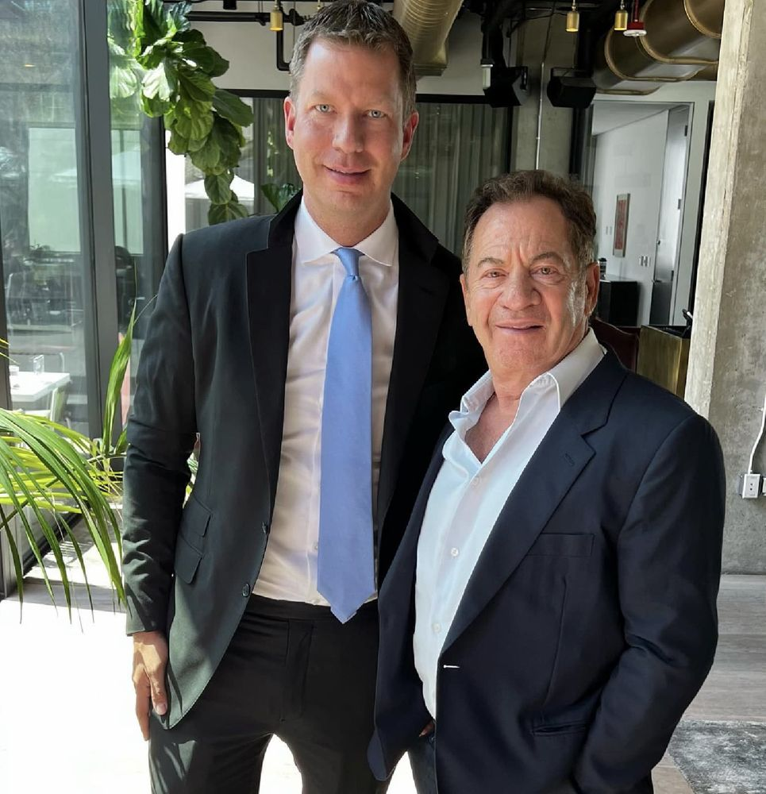
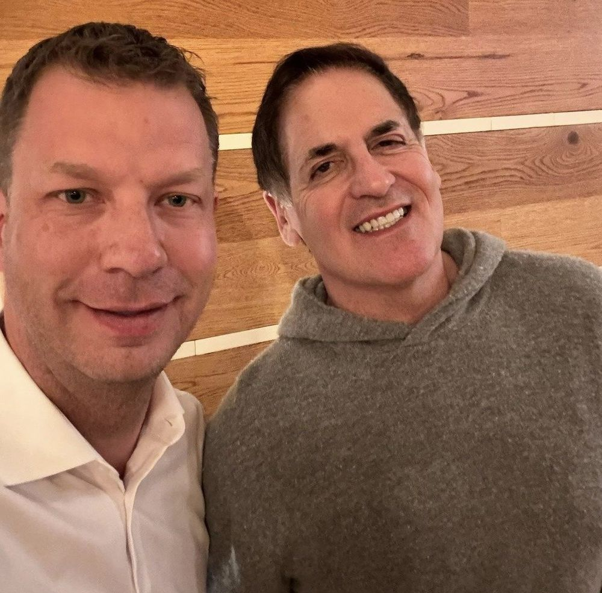
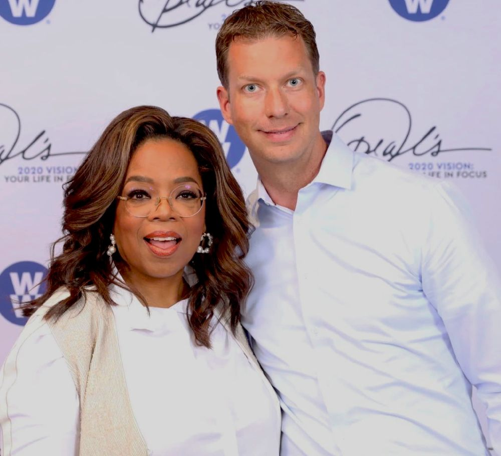
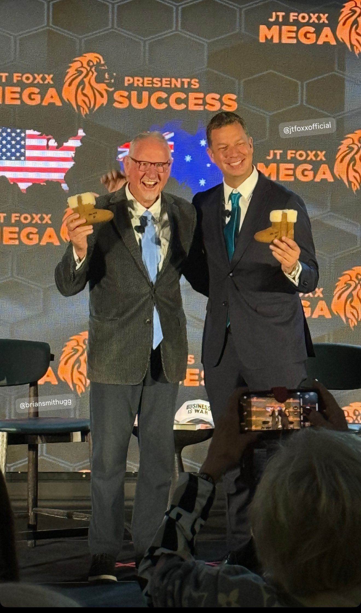

The Network — And What It Opens
These Aren't Famous Faces. They're Open Doors.
Each relationship below was earned over decades. Point that access at one country, and doors that usually take years to reach open in a single conversation.

With Alec Gores · The Gores Group
The investors who move billions pick up when he calls.
Decades of relationships across private equity and global business — the kind of access that opens doors for Egypt's investment future.

With Mark Cuban · Investor
The investors who back the future return his messages.
Relationships like these are the doors that global capital usually waits behind.

With Oprah Winfrey · Harpo / OWN
Real influence is simply trust, multiplied.
A network earned over a lifetime — and a reputation that opens doors on Egypt's behalf.

With Brian Smith · CEO
The executives who scale companies trust his read of a room.
A relationship built through boardrooms and closed deals — the kind of credibility that fast-tracks Egypt's next partnership.

With Anna Wintour · Vogue
The arbiter of global taste takes his calls too.
Access to culture and media at the highest level — a spotlight that can turn Egypt into a destination story.
With Donna Karan · Designer
The designers who shape global fashion know him by name.
Decades spent in the world's most exclusive rooms — the kind of introduction that opens Egypt to global brands.

With Dr. Phil McGraw · Media
The voices that reach millions consider him a friend.
A relationship with one of media's most trusted names — a platform that can carry Egypt's story to a global audience.

With Michael Douglas · Actor
Hollywood's most respected names call him a friend.
Relationships built over decades on camera and off — the kind of prestige that puts Egypt on the map.

With Gabriel Macht · Actor
The talent behind the world's biggest screens knows his name.
A network that spans entertainment's inner circle — doors that turn Egypt into more than a headline.